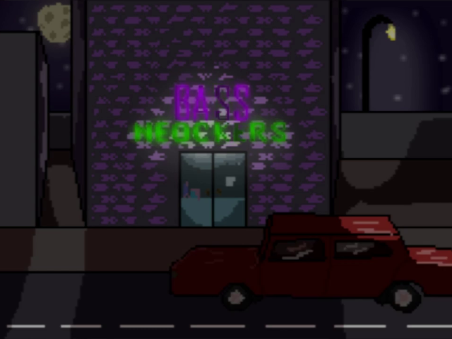
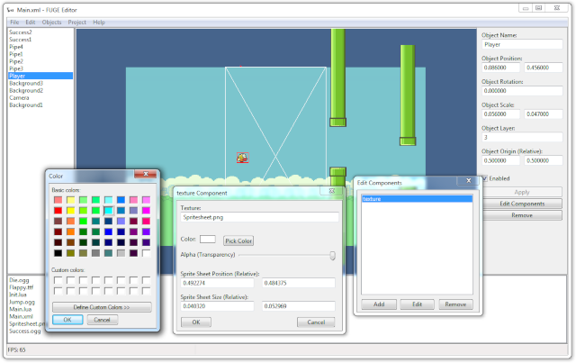

Simple 2D game engine written using Direct3D 9 for Windows and Xbox 360 game console.
It supports rendering 2D sprites, drawing bitmap fonts, streaming wave audio and handling keyboard/controller input.
Lua scripting is supported out of the box, with all of the core engine functionality exposed to Lua as well.
View more

Very simple 2D game engine with its own editor program.
Some of the core engine features include rendering 2D sprites, drawing TrueType fonts, streaming various audio formats, handling keyboard input, Lua scripting support, builtin scene swapping mechanisms, component-driven system (similar to Unity) and more.
View more